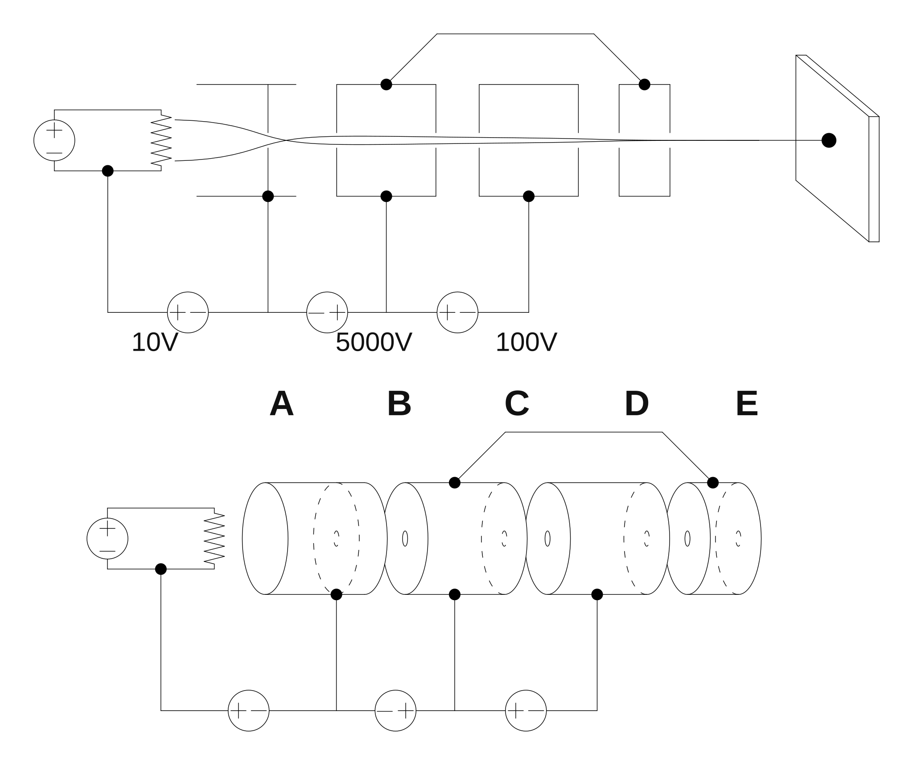
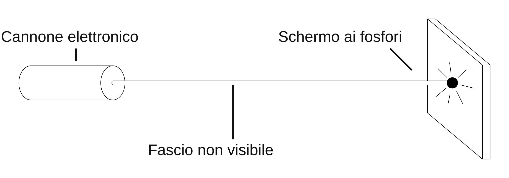
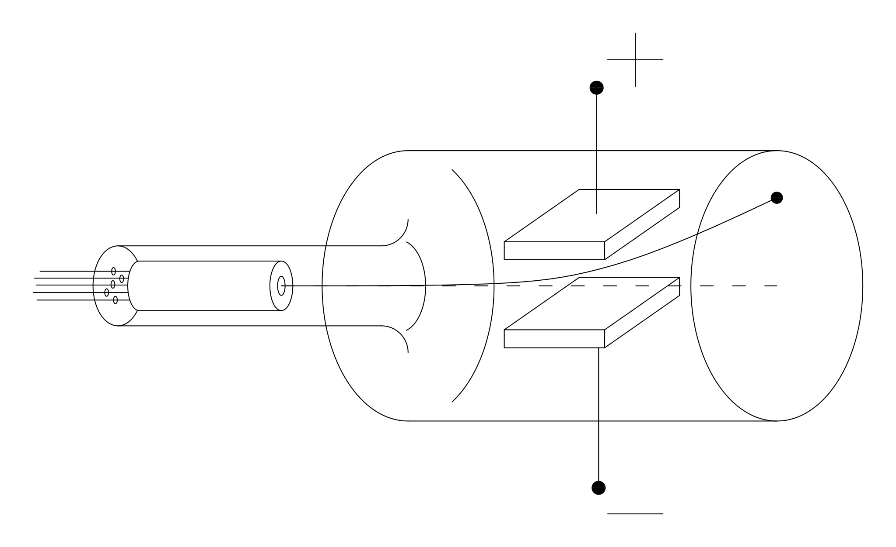
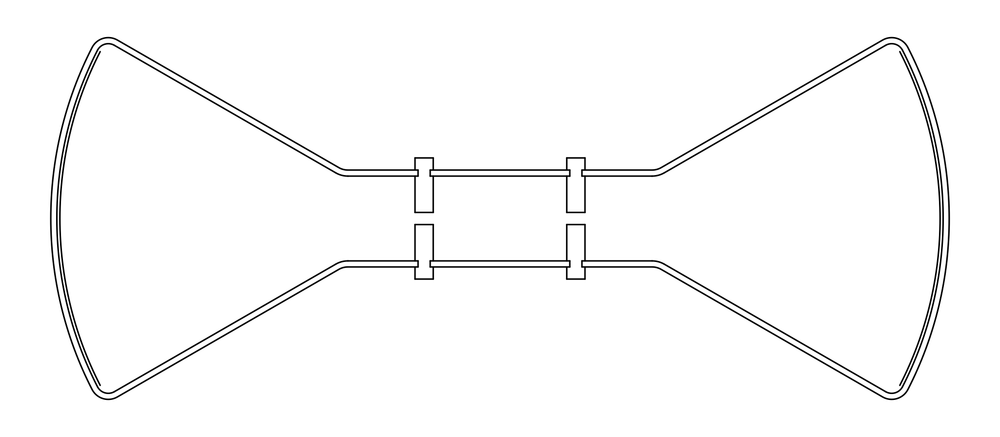
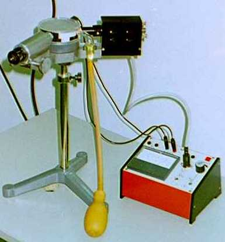
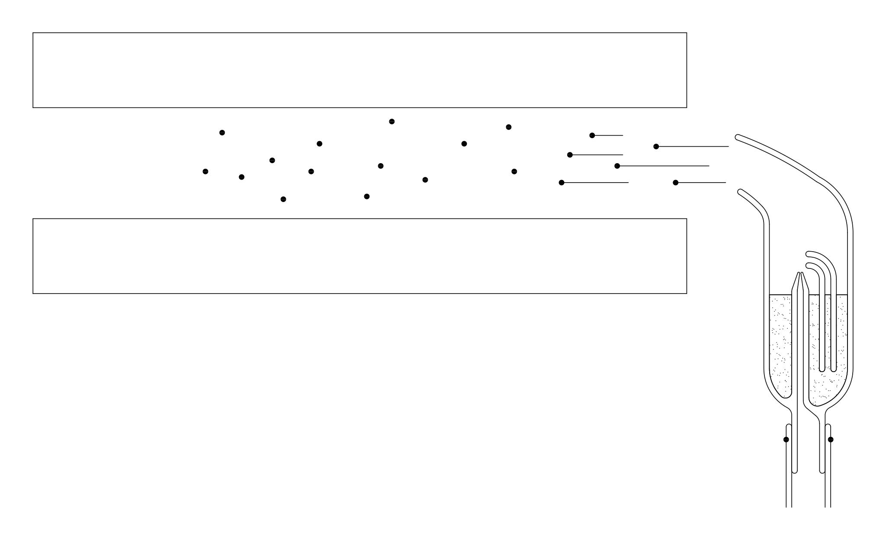
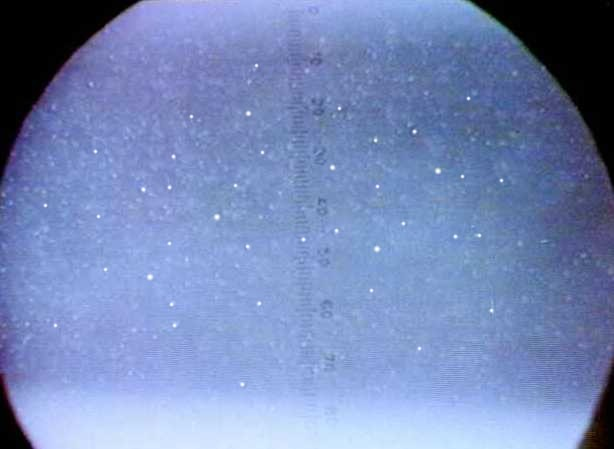
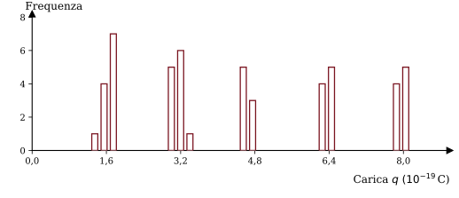

Capitolo 3
Esperimenti con gli Elettroni
Ogni oggetto materiale, come sappiamo, è costituito da un aggregato di particelle elementari; una delle particelle più importanti è l'elettrone perché determina molte caratteristiche della materia. In questa scheda descriveremo alcuni esperimenti con i quali è possibile isolare l'elettrone e studiarne le proprietà fondamentali.
Primo esperimento: conduzione di corrente nel vuoto

La fig. 1 mostra un'ampolla di vetro nella quale è fatto il vuoto. All'interno dell'ampolla sono disposti due elettrodi A e B; l'elettrodo A può essere riscaldato mediante effetto Joule. Se si applica una tensione tra i punti A e B (fig. 2), si osserva una circolazione di corrente che può essere rilevata con un amperometro inserito in serie al circuito. Se l'elettrodo A viene riscaldato si osserva che la corrente aumenta sensibilmente.

Come è possibile che ci sia conduzione di corrente tra due punti separati nel vuoto?
Il fenomeno si può interpretare pensando che esistano delle particelle cariche che si possono trasferire nello spazio tra i due elettrodi. Quando viene applicata una differenza di potenziale, l'elettrodo A emette queste particelle cariche che, trasferendosi all'altro elettrodo, formano la corrente nel vuoto. Quando l'elettrodo A viene riscaldato, questo libera un numero maggiore di particelle e quindi permette un maggior flusso di corrente.
Cannone di particelle cariche (cannone elettronico)

Il dispositivo rappresentato in figura 3 è un ingegnoso sistema che ci permette di realizzare un fascio focalizzato di particelle cariche negative.
Consideriamo una particella carica negativa emessa dal filamento caldo A. Nel percorso A→B la particella viene rallentata da una differenza di potenziale di circa 10 V; questo stadio serve a regolare il flusso di particelle: più è alta la tensione e meno particelle passano nello stadio successivo. Nel percorso B→C le particelle vengono accelerate notevolmente da una differenza di potenziale dell'ordine di 5000 V; questo stadio serve a dare energia alle particelle del fascio. Nei percorsi C→D e D→E le particelle vengono prima rallentate e poi accelerate da una differenza di potenziale dell'ordine di 100 V. Questi due stadi costituiscono due lenti elettrostatiche, la prima convergente e la seconda divergente, che permettono di focalizzare il fascio ad una certa distanza fissata.
In uscita da questo sistema si ottiene un fascio di particelle cariche negative veloci, ben focalizzato.
È chiaro che un cannone di particelle cariche può essere realizzato in molti modi diversi, e che può avere una tensione di accelerazione anche molto più alta o più bassa di 5000 V; tuttavia lo schema semplice che abbiamo mostrato è sufficiente per gli esperimenti che descriveremo in questa scheda.
È interessante provare ad alimentare il sistema con tensioni di segno opposto. In linea di principio dovremmo ottenere un cannone di particelle cariche positive, ma si osserva che non viene proiettata nessuna particella. Questo si può spiegare pensando che un filamento riscaldato emette solo particelle cariche negative.
Schermo ai fosfori

Il fascio di particelle cariche non è direttamente visibile. Per poter rilevare il fascio si usa uno schermo ai fosfori (fig. 4).
Lo schermo ai fosfori è sostanzialmente una lastra di vetro sulla quale è depositata una particolare sostanza chimica che, quando viene colpita dalle particelle cariche accelerate, emette luce visibile, rendendo luminoso il punto di incidenza.
Per ora non ci preoccuperemo di spiegare questo fenomeno di fosforescenza, ma lo useremo solo come fatto empirico che ci permette di realizzare i nostri esperimenti.
Deflessione del fascio dovuta a campi elettrici e magnetici

L'apparato di figura 5 è costituito da un cannone elettronico, da una coppia di piastre che ci permettono di realizzare un campo elettrico uniforme, e da uno schermo ai fosfori. Il tutto è chiuso in una camera di vetro nella quale è fatto il vuoto. Se si alimentano le piastre con una differenza di potenziale si osserva una deflessione dovuta al campo elettrico, esattamente come ci aspettavamo pensando che il fascio fosse formato da un insieme di particelle cariche negative. Quindi questo esperimento costituisce una conferma all'ipotesi che un filamento conduttore riscaldato emette particelle cariche negative.

Nel sistema di figura 6 le due piastre conduttrici sono state sostituite da due bobine. Facendo attraversare queste bobine da una corrente, si genera un campo magnetico che provoca una deflessione del fascio. Anche in questo caso la deflessione è esattamente come ce l'aspettavamo in base all'ipotesi che il fascio è composto da un insieme di particelle cariche.
Ora calcoliamo gli angoli di deflessione \(\delta_E\) e \(\delta_B\) relativi al campo elettrico e al campo magnetico, in base all'ipotesi di validità delle leggi di Newton.
Deflessione dovuta al campo elettrico

Deflessione dovuta al campo magnetico

Come si vede dalle formule, gli angoli di deflessione dipendono direttamente dal rapporto \(\dfrac{q}{m}\) tra la carica e la massa delle particelle cariche. Se il fascio fosse composto da diversi tipi di particella, con diversi rapporti \(\dfrac{q}{m}\), allora avremmo ottenuto diversi angoli di deflessione per le diverse particelle, ed avremmo osservato più di un punto luminoso sullo schermo ai fosfori. Il fatto che otteniamo un solo angolo di deflessione è una prova che le particelle emesse dal filamento incandescente hanno tutte lo stesso rapporto tra carica e massa. È molto ragionevole pensare che in realtà si tratti di un solo tipo di particella, con una determinata massa ed una determinata carica. Quest'ipotesi è confermata da molte altre esperienze e le particelle in questione vengono chiamate elettroni.
Esperimento di Thomson
Il dispositivo per l'esperimento di Thomson contiene entrambi i sistemi di deflessione: le piastre per il campo elettrico e le bobine per il campo magnetico.
Lo scopo dell'esperimento è di determinare il rapporto \(\dfrac{q}{m}\) tra la carica e la massa dell'elettrone, e si esegue in due passi.
Prima si alimentano i due sistemi in opposizione, regolando l'intensità dei campi elettrico e magnetico in modo da osservare una deflessione nulla. In questo modo si ha un bilanciamento tra la forza magnetica e la forza elettrica e, dalla relativa relazione di equilibrio, è possibile ricavare la velocità degli elettroni:
Poi si misura la deflessione dovuta ad uno solo dei due sistemi e, conoscendo la velocità \(v_x\), si determina il rapporto \(\dfrac{q}{m}\). Ad esempio, misurando \(\delta_B\):
Con questi esperimenti abbiamo individuato un'importante particella con carica negativa, l'elettrone. Tuttavia non abbiamo ancora osservato nessuna particella positiva: questo perché un filamento incandescente emette solo elettroni e quindi il cannone elettronico non può sparare particelle con carica positiva. Noi però sappiamo che la materia è sostanzialmente neutra, quindi per ogni carica negativa ci deve essere una corrispondente carica positiva. Nel prossimo esperimento mostreremo che un atomo neutro è formato da un certo numero di elettroni e da una particella positiva. Le particelle positive ottenute togliendo uno o più elettroni ad un atomo neutro vengono chiamate ioni positivi.
Separazione dell'atomo in ioni positivi ed elettroni

La figura 7 mostra l'apparato sperimentale. Abbiamo un tubo di vetro e, alle estremità destra e sinistra, due schermi ai fosfori. Nella parte centrale sono disposti due elettrodi forati. All'interno del tubo è presente un determinato gas a bassa pressione (circa \(10^{-2}\) atmosfere).
Se alimentiamo i due elettrodi con una tensione di circa 1000 V, sui due schermi appaiono due punti luminosi (fig. 8): a destra otteniamo un fascio di particelle negative, a sinistra un fascio di particelle positive.

Possiamo inserire dei sistemi di deflessione per studiare il tipo di particelle che vengono proiettate, misurandone il rapporto \(\dfrac{q}{m}\) tra carica e massa (fig. 9).

Eseguendo queste misure si osserva che le particelle negative non dipendono dal tipo di gas immesso nell'apparato, e sono le stesse che abbiamo trovato con il cannone elettronico: quindi sono elettroni. Le particelle positive, invece, dipendono dal tipo di gas. Si osserva inoltre che le particelle positive subiscono una deflessione molto minore di quella subita dagli elettroni sotto lo stesso campo elettrico. Questo vuol dire che il rapporto \(\dfrac{q}{m}\) delle particelle positive è molto minore di quello degli elettroni.

In alcuni casi, come mostra la figura 10, le particelle positive generano due o anche più punti luminosi. I punti aggiuntivi corrispondono ad un rapporto \(\dfrac{q}{m}\) multiplo di quello principale: \(2\dfrac{q}{m}\), \(3\dfrac{q}{m}\), ecc.
Questo esperimento può essere interpretato pensando che gli atomi siano formati da una particella positiva, che chiameremo ione, e da un certo numero di elettroni. La maggior parte degli atomi sono uniti e formano una struttura neutra. In alcuni casi però ci possono essere anche atomi divisi e, quando si applica una tensione agli elettrodi, lo ione e gli elettroni vengono accelerati in direzioni opposte. In questo modo, al di là dei fori praticati sugli elettrodi, si generano dei fasci di particelle cariche.
Le particelle positive subiscono una deflessione molto inferiore a quella degli elettroni, quindi, dovendo avere la stessa carica \(q\), vuol dire che hanno una massa \(m\) molto maggiore. Il rapporto tra la massa dell'elettrone e quella dello ione dipende dall'atomo considerato ed è dell'ordine di \(1/1000\).
Il fatto che gli ioni possano generare anche più di un punto luminoso si spiega pensando che uno ione può essere ottenuto anche togliendo più di un elettrone ad un atomo neutro. In questo modo la carica dello ione diviene multipla di quella dell'elettrone, mentre la massa rimane praticamente invariata (perché l'elettrone è molto leggero rispetto all'atomo neutro, quindi la sottrazione di un elettrone non cambia molto la massa); ne risulta un rapporto \(\dfrac{q}{m}\) multiplo di quello fondamentale ed una deflessione multipla.
A questo punto può sorgere una domanda: quanti elettroni si possono togliere da un atomo neutro?
Alcuni esperimenti, che non discuteremo in questa scheda, mostrano che gli atomi sono formati da un numero finito di elettroni. Questo numero dipende dal tipo di atomo, può essere solo uno, come nel caso dell'idrogeno, e può arrivare oltre a cento. La particella positiva che rimane togliendo ad un atomo tutti i suoi elettroni è chiamata nucleo.
Fino ad ora abbiamo misurato i rapporti \(\dfrac{q}{m}\) degli elettroni e degli ioni, ma non abbiamo ancora misurato la carica \(q\) e la massa \(m\) separatamente. Per concludere questa scheda descriviamo un esperimento molto ingegnoso ed elegante che ci permette di misurare la carica \(q\) dell'elettrone.
Esperimento di Millikan


Le figure 11 e 12 mostrano due foto dell'apparecchiatura.

Il primo elemento da osservare è il nebulizzatore per l'olio ad effetto Venturi, rappresentato schematicamente in figura 13. Le goccioline spruzzate dal nebulizzatore entrano attraverso due forellini tra le piastre conduttrici di un condensatore racchiuso sotto una camera di plastica trasparente; la figura 14 mostra uno schema del nebulizzatore, del condensatore e delle goccioline.


La figura 15 mostra una foto del condensatore e della camera che lo racchiude. Le goccioline spruzzate all'interno del condensatore sono visibili mediante un microscopio, rappresentato a sinistra nella figura 12; l'illuminazione della parte interna del condensatore è ottenuta da una lampada rappresentata a destra nella stessa figura 12. La foto di figura 16 mostra quello che si vede guardando attraverso il microscopio.

Osservando le goccioline si vede che queste cadono sotto l'azione del campo gravitazionale (in realtà si vedono salire perché il microscopio capovolge l'immagine).

Se si alimentano le piastre con una certa tensione \(V\) (fig. 17), si osserva che il moto di alcune goccioline cambia: certe scendono più velocemente, certe scendono meno velocemente, certe altre iniziano a salire. Questo vuol dire che alcune goccioline portano una carica elettrica diversa da zero, e quindi subiscono una forza sotto l'azione del campo elettrico.
Lo scopo dell'esperimento è di misurare la carica di una delle goccioline. Regolando la tensione \(V\) si può fare in modo che la gocciolina scelta resti ferma in equilibrio. In questa condizione abbiamo un bilanciamento tra le varie forze: la forza peso, la spinta di Archimede dovuta all'aria e la forza elettrica:
In questa equazione \(g\) è l'accelerazione di gravità, \(\rho_{Olio}\) e \(\rho_{Aria}\) sono le densità dell'olio e dell'aria, \(R\) è il raggio della gocciolina ed \(E\) è il campo elettrico presente tra le piastre del condensatore. Queste grandezze sono tutte note, eccetto il raggio \(R\) della gocciolina; quindi, per derivare la carica \(q\), dobbiamo trovare il modo di misurare questo raggio. Il metodo escogitato da Millikan è molto intelligente.
Si spegne il campo elettrico e la gocciolina inizia a cadere. La velocità di caduta della gocciolina aumenta fino a raggiungere una velocità limite alla quale le forze dovute al peso, alla spinta di Archimede e all'attrito viscoso con l'aria si bilanciano:
In questa equazione abbiamo usato la formula di Stokes per la forza viscosa, \(F = 6\pi R\,\eta\,v\), dove \(\eta\) è la viscosità dell'aria e \(v\) è la velocità della gocciolina.
Dalla seconda equazione possiamo ricavare il raggio \(R\) della gocciolina:
Ora possiamo ricavare la carica \(q\) dalla prima equazione:
sostituendo la formula trovata per \(R\):
La formula definitiva per la carica \(q\) è
Le grandezze da misurare nell'esecuzione dell'esperimento sono il campo elettrico \(E\) e la velocità di caduta della gocciolina \(v\). Il campo \(E\) è dato dal rapporto \(V/d\) tra la tensione \(V\) applicata e la distanza \(d\) tra le piastre del condensatore. La velocità \(v\) si ottiene dal rapporto \(\Delta x/\Delta t\) tra lo spazio \(\Delta x\) ed il tempo \(\Delta t\). Lo spazio \(\Delta x\) si misura mediante una scala graduata visibile all'interno dell'oculare; il tempo \(\Delta t\) si misura con un cronometro manuale.
Risultati sperimentali
Le costanti da utilizzare nella formula per la carica \(q\) sono:
Sostituendo questi valori otteniamo la formula
La seguente tabella mostra alcune misure di esempio.
| V (Volt) | Δx (10-3 m) | Δt (s) | q (10-19 C) |
|---|---|---|---|
| 140 | 3,2 | 45,4 | 8,3 |
| 50 | 3,2 | 125,5 | 5,1 |
| 250 | 3,2 | 59,1 | 3,2 |
| 480 | 3,7 | 24,1 | 8,0 |
| 400 | 3,7 | 49,5 | 3,3 |
| 510 | 3,7 | 41,7 | 3,3 |
| 270 | 3,2 | 88,1 | 1,6 |
| 380 | 3,2 | 44,1 | 3,2 |
| 400 | 3,2 | 66,1 | 1,7 |
Il seguente istogramma rappresenta una serie di 50 misure.

La cosa importante da osservare in questi risultati è che i valori della carica \(q\) non sono casuali. Compare ripetutamente il valore di circa \(1{,}6\cdot10^{-19}\) C, e poi compaiono altri valori che sono multipli di \(1{,}6\cdot10^{-19}\) C, cioè \(3{,}2\cdot10^{-19}\) C, \(4{,}8\cdot10^{-19}\) C e \(6{,}4\cdot10^{-19}\) C. Inoltre non ci sono valori inferiori a \(1{,}6\cdot10^{-19}\) C.
Questi risultati provano che la carica accumulata sulle goccioline di olio è corpuscolare, cioè è formata da un certo numero di particelle elementari ognuna delle quali porta una carica costante di \(1{,}6\cdot10^{-19}\) C.
È ragionevole pensare che queste particelle siano elettroni. Quindi con questo esperimento abbiamo determinato la carica dell'elettrone.
Ricapitolazione
In questa scheda abbiamo preso familiarità con un'importante particella elementare, l'elettrone. Abbiamo descritto degli esperimenti nei quali l'elettrone si comporta come una particella materiale della meccanica classica. Tramite questi esperimenti abbiamo visto come si può misurare il rapporto \(\dfrac{q}{m}\) tra la carica e la massa ed infine, grazie all'esperimento di Millikan, abbiamo misurato la carica \(q = 1{,}6\cdot10^{-19}\) C. Inoltre abbiamo descritto un esperimento che ci permette di raccogliere le prime informazioni sulla struttura dell'atomo: abbiamo visto che un atomo è un sistema neutro formato da un nucleo positivo e da un certo numero di elettroni, e abbiamo osservato che un nucleo è molto più pesante di un elettrone, quindi contiene quasi tutta la massa dell'atomo.